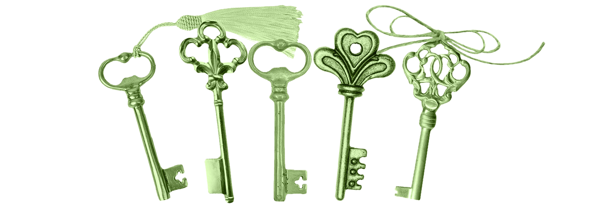
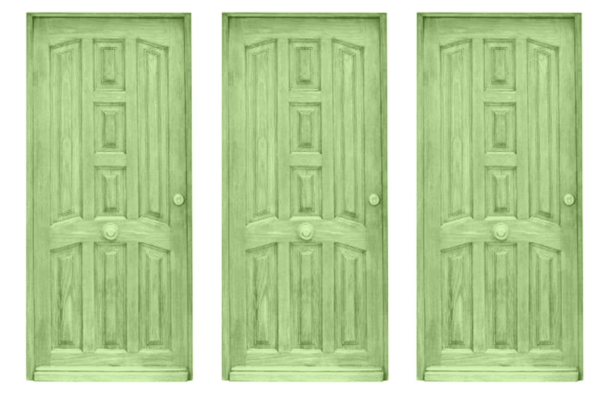
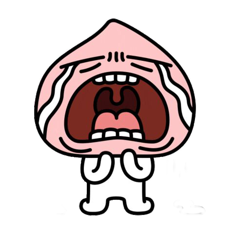
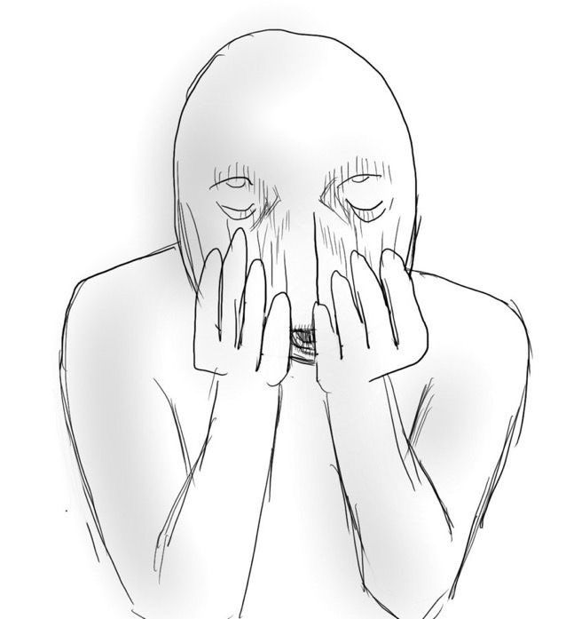

이땐 몰랐지
친구와 함께 로마에 갔다. 로마 숙소는 대문짝만한 문을 세 개나 열고 가야 하는 구조였다. 대문, 숙소 문, 우리 방 문..
아침 일찍 일어나 준비를 마친 나와 친구는 받은 열쇠를 꼭 쥐고 문밖으로 나갔다. 혹시라도! 라는 생각에 숙소 문을 미리 열어보기로 했다.
그 순간, 숙소 문과 맞는 열쇠가 없었다.. 총 3개의 열쇠를 받았는데 이게 뭐지? 정말 그 어느 것과도 맞지 않았다. 너무너무 당황했다. 로마 첫날부터 이런 일을 겪다니..
대체 사장님이 주신 열쇠는 무엇이지?
(그 순간 스쳐 지나가는 많은 생각들)
다행히 숙소를 같이 쓰시는 분들이 때마침 밖으로 나오셔서 일단 숙소로 들어갈 수 있었다.
다급하게 사장님에게 문자를 보내 숙소 문 열쇠가 없는 것 같다. 잘못 주셨다. 라는 긴급 sos를 보내고, 사장님이 스페어 열쇠 위치를 알려주셔서 새로운 열쇠를 또 받게 되었다.
무려 스페어 열쇠 뭉치는 무려 5개라는 수많은 열쇠들이 포함되어 있었다. 그때부터 문을 열기 위한 사투가 시작된 것일까?

친구와 나는 스페어 열쇠를 받고 차근차근 문을 열고 나가고, 다시 열어보고 검토의 검토를 통해 드디어 밖으로 나올 수 있게 되었다.
세 개의 관문

행복한 하루를 보내고 돌아온 친구와 나는 이제 쉬기 위해 숙소에 들어가기로 했다.
우리가 숙소에 가기까진 세 개의 관문이 있다. 우리는 첫번째 관문을 열기위해 열쇠를 뒤적거리기 시작했다. 2025년도에 아직도 열쇠로 문을 잠근다는 건 얼마나 시대착오적인가?라는 생각과 함께 마침내 첫번째 대문 열쇠를 찾았다! 그리고 우리는 손쉽게 첫 번째 관문을 열었다.
다음은 두 번째 관문이었다.. 또 시작된 문제의 문은 우리가 수많은 열쇠를 하나하나 꽂아봤는데도 불구하고,,, 정말 단~ 하나도 열리지 않았다.. 패닉이 온 우리 둘은.. 오전 같은 기적이 일어나지 않을 것 같다는 불길한 기분을 느끼며 다시 한번 하나부터 다섯까지.. 모든 열쇠를 이리저리 돌려가며 다시 꽂아보았다.
이제 30분쯤 지났나?
나와 친구는 믿을 수 없는 불안감과 영영 숙소에 들어갈 수 없다는 공포감에 질려 덜덜 떨면서, 다시 한번 하나부터 열까지 다시 시도해 보고,
1시간쯤 지나.. 정말, 패닉이 왔다
나는 다급하게 사장님께 연락을 보냈다. 사장님이 연락을 보시지 않을까, 다급하게 로밍도 하지 않은 상태로 국제전화..를 걸어 안되는 영화로 거의 눈물을 흘리며 간절한 소통을 시작했다.
I tried to open the hotel with our room key but I don't know how to open it. Can't get into the hotel?
we find key is just only one
sorry we open the door thank you so much
very sorry
my room restroom is locking
사장님께 10분만에 연락이 왔다!
Look, I’m not nearby,
and it's a 30-minute drive at best. Just give the key another shot. It definitely opens, I promise
뭐?
믿을 수 없었다.
사장님의 이 믿을 수 없는 책임감에 우리는 또… 좌절했다. 사장님을 기다리면서 다시 한번 4차 시도를 해보고 거의 죽어가던 그 시점
드디어!!!!!!!!!!!!!!!!!! 절대 열리지 않을 것 같던 철옹성 같던 그! 숙소 문이 열렸다… 열쇠가 참.. 열기 힘들어서 그런가? 분명해 본 열쇠였는데… 정말 잘 열리지 않았다…..ㅠㅠ 문이 열리는 그 순간에 우리는 감격의 포옹으로 서로를 끌어안았다.

끝날 때까지 끝난 게 아니다!
행복하게 숙소를 들어온 그 순간.. 뒤를 돌아보니

갑자기 사장님이 창백하고 땀에 질린 얼굴로 있으셨다. 사장님은 우리한테 가고 있다는 말도 안 하셨지만,, 사실! 다급하게 오고 있던 것이었다.. 죄송합니다 사장님 세상에, 얼마나 어글리 코리안인가? 우리가 한 행동에 정말 이를 꽉! 깨물고 죽고 싶었다… 그래서 사장님은 핼쑥하게 질린 얼굴로 다시 한번 우리에게 문을 여는 방식을 알려주셨고
가시려는 찰나에,
우리 숙소 화장실이 잠겼다… 내 친구가 거기 갇혀버린 것이다. 이게 무슨 말도 안 되는 일들이 일어나는 걸까? 또 가시려는 사장님의 바짓가랑이를 붙잡고 손짓 발짓을 써가며 화장실 문을 열어달라고 호소했고… 사장님이 화장실 문을 열어주셨다…
이때쯤 정말 참을 수 없는 수치심을 느꼈고 정말 진심으로 사장님에게 죄송스러웠다…
그 후 나와 친구는 단 한 번의 웃음 없이 우리가 얼마나 어글리 코리안인지 얘기를 나눴고 서로 수치심으로 싸한 밤을 보내게 되었다….
분명 같은 열쇠로 한시간을 넘게 시도했는데 대체왜!!! 사장님이 오시기 직전에 문이 열린걸까… 진짜 알다가도 모르겠는 로마 숙소였다.
교훈! 로마 같은 곳에선… 열쇠를 50번 정도 시도해 보고 안되면 그때 사장님을 부르자!